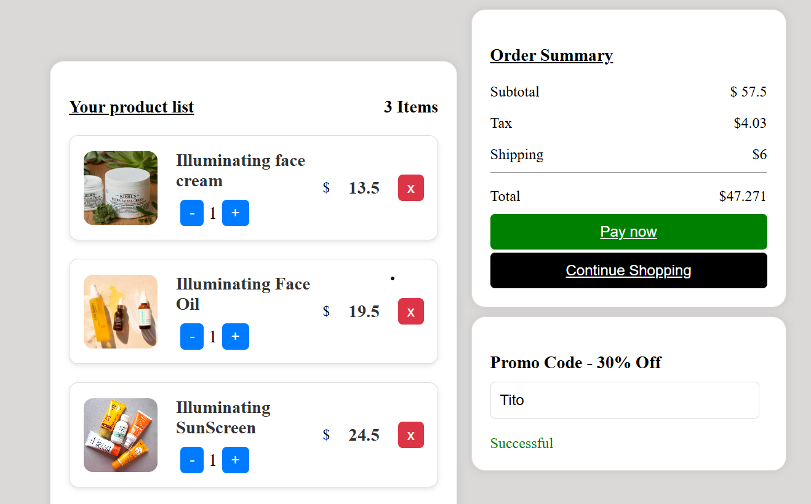

Shopping Cart
Welcome to my Shopping Cart application. Below, you'll find details about the application, its core functionalities, and the design approach.
Go to Website
How It Was Built
This Shopping Cart is a dynamic web application designed to provide a seamless shopping experience. Built using HTML, CSS, and TypeScript, the application allows users to browse products, add items to their cart, and proceed to checkout. The shopping cart features include updating quantities, removing items, and calculating totals in real-time. The project was focused on Object-Oriented Programming (OOP) principles to create a modular and maintainable codebase.
Core Functionalities
- Browse Products: Users can view a list of available products and their details.
- Add Items to Cart: Users can add products to their shopping cart with a single click.
- Update Quantities: Users can adjust the quantity of items in their cart.
- Remove Items: Users can remove items from their cart when no longer needed.
- Real-Time Total Calculation: The cart automatically updates the total price based on the items and quantities selected.
- Responsive Design: The application is designed to be accessible and functional across various devices and screen sizes.
Design Approach
The Shopping Cart application is designed with a focus on user experience and efficiency. The interface is clean and intuitive, allowing users to easily navigate through products and manage their cart. Real-time updates and responsive design ensure a smooth shopping experience on both desktop and mobile devices. Additionally, the application incorporates Object-Oriented Programming (OOP) to enhance code reusability and maintainability.
Challenges Faced
- Implementing real-time updates for cart quantities and totals while maintaining performance.
- Designing a user-friendly interface that effectively displays products and cart information.
- Ensuring that the application works seamlessly across different devices and screen sizes.
Special Offer
Use the promo code Tito to get a 30% discount on your purchase!